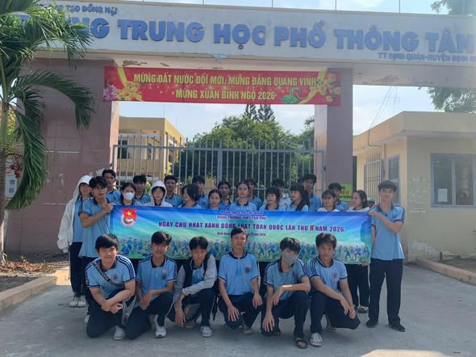
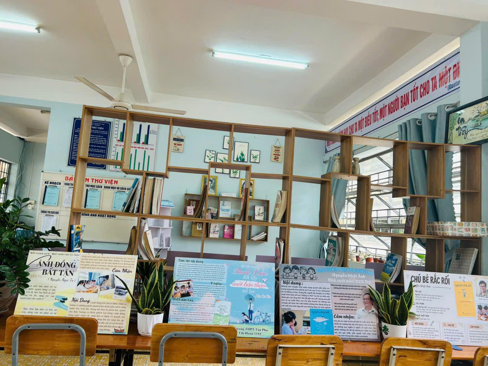
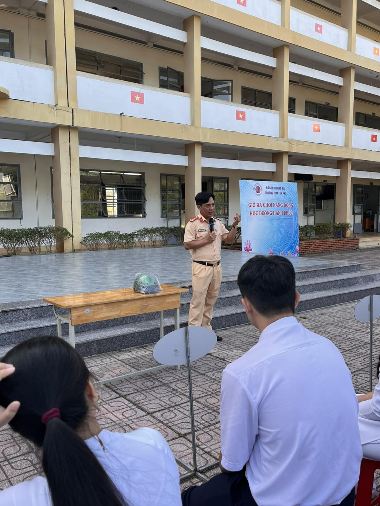
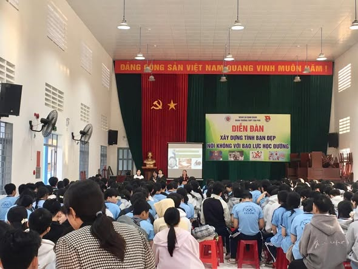

|
SỞ GIÁO DỤC VÀ ĐÀO TẠO ĐỒNG NAITRƯỜNG THPT TÂN PHÚ |
|
SỞ GIÁO DỤC VÀ ĐÀO TẠO ĐỒNG NAITRƯỜNG THPT TÂN PHÚ |
| Trang chủ |
|---|
| Kiến thức và pháp luật |
| Kỹ năng sống |
| Hướng nghiệp |
| Kiến thức phổ thông |
Đoàn viên, thanh niên tích cực ra quân dọn dẹp vệ sinh khuôn viên, thu gom, phân loại rác và chăm sóc cây xanh, qua đó rèn luyện tinh thần xung kích, kỹ năng làm việc nhóm và năng lực hợp tác giải quyết vấn đề thực tế.
Hoạt động góp phần xây dựng cảnh quan sư phạm xanh - sạch - đẹp, đồng thời lan tỏa ý thức trách nhiệm công dân, định hình nếp sống văn minh và tinh thần bảo vệ môi trường bền vững trong học đường.
Hoạt động quyên góp sách và tôn vinh văn hóa đọc giúp học sinh hình thành thói quen đọc sách, nâng cao năng lực tự nghiên cứu, tìm tòi tri thức và rèn luyện tinh thần chia sẻ, ý thức xây dựng cộng đồng học tập suốt đời.
Cuộc thi thiết kế poster đòi hỏi các chi đoàn phải phối hợp nhịp nhàng, qua đó trang bị cho học sinh kỹ năng làm việc nhóm, phân chia công việc, tư duy thẩm mỹ sáng tạo và năng lực truyền thông, thuyết trình một vấn đề thực tế
Phối hợp với lực lượng chuyên trách giúp học sinh nắm vững các quy định pháp luật về trật tự giao thông, nhận diện các lỗi vi phạm phổ biến, đồng thời hướng dẫn thực hành các kỹ năng cơ bản như đội mũ bảo hiểm đúng quy cách để tự bảo vệ bản thân.
Thông qua các câu chuyện và tình huống minh họa sinh động, hoạt động giúp học sinh hiểu rõ hậu quả của tai nạn, nâng cao ý thức trách nhiệm cá nhân, từ đó hình thành thói quen ứng xử văn minh và xây dựng môi trường học đường an toàn.
Tiết học giúp học sinh hiểu rõ giá trị lao động, tầm quan trọng của tài chính cá nhân, từ đó hướng dẫn phương pháp lập kế hoạch thu - chi khoa học, cân đối giữa nhu cầu và mong muốn thực tế.
Qua các hoạt động thảo luận nhóm, học sinh được rèn luyện tư duy tiêu dùng có trách nhiệm, rèn nếp sống tiết kiệm, lành mạnh để chủ động chuẩn bị hành trang vững vàng cho cuộc sống tự lập tương lai.

Tuổi trẻ THPT Tân Phú phát huy tinh thần xung kích, tình nguyện bảo vệ môi trường thông qua chiến dịch "Ngày Chủ nhật xanh"

Chủ đề: Phát triển tư duy tự học, năng lực sáng tạo và kỹ năng hợp tác qua ngày hội văn hóa đọc

Chủ đề: Trang bị kiến thức pháp luật và rèn luyện kỹ năng tham gia giao thông an toàn cho học sinh

Chủ đề: Giáo dục kỹ năng quản lý tài chính và định hình thói quen tiêu dùng thông minh cho học sinh